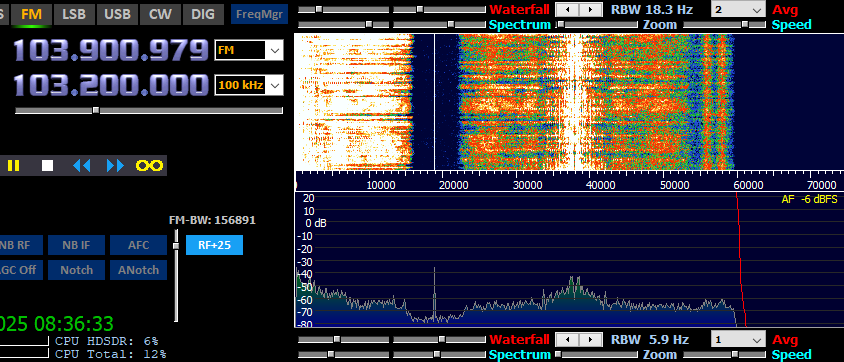
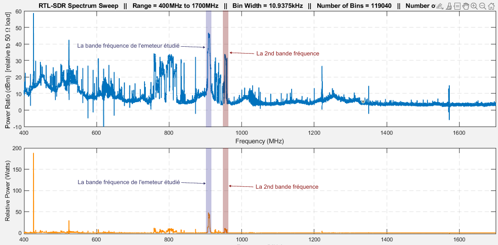

Julien RIBARDIERE
- Age: 27 ans
- Localisation: CAEN, Calvados
- Formation en cours: BUT Réseaux et Télécommunication
- Mail: julien.ribardiere14@gmail.com

Le but de ce projet est de mobiliser mes connaissances et mes compétences pour analyser des signaux d’un système de transmission, les exploiter, et les présenter sous forme d’un bilan à un client ou un collaborateur.
Le matériel utilisé est le RTL-SDR qui permet de capter et traiter des signaux électromagnétiques sur une plage de fréquence de 25MHz à 1750 MHz.
Découvrir les transmissions et la ToIP
• Mesurer et analyser les signaux
• Caractériser des systèmes de transmissions élémentaires et découvrir la modélisation mathématique de leur fonctionnement
• Déployer des support de transmission
• Communiquer avec un tiers (client, collaborateur...) et adapter son discours et sa langue à son interlocuteur
J'ai pu etre former sur l'utilisation de Matlab, un prérequis dans ce projet pour pouvoir utiliser le RTL-SDR.
Ensuite, j'ai pu utiliser le RTL-SDR pour capter des signaux électromagnétiques avec le logiciel HDSDR. Et j'ai pu utiliser MATLAB pour étudeir le spectre de la téléphonie mobile, nottament sur la bande de fréquence de la 3G.
Donc, j'ai également pu découvrir les différents types de signaux et leurs caractéristiques, ainsi que les méthodes de mesure et d'analyse des signaux.
Voici actuellement les resultats obtenus concernant le projet:
 Note: La seconde bande de fréquence (en rouge) provient du meme emeteur 3G étudier mais est moins solicité que la bande de fréquence étudiée (en bleu)
Ce projet fut une opportunité pour moi de découvrir l'utilisation du RTL-SDR et de MATLAB. En effet, j'ai pu apprendre à maitriser les outils des récéptions des fréquences avec une antenne radio et ainsi écouter divers son issue de la FM.
Cependant, j'ai rencontré des difficultés pour comprendre les concepts de la modulation et de la démodulation des signaux, ainsi que pour interpréter les résultats obtenus avec MATLAB. J'ai donc du me référer à mes collègues pour essayer de mieux comprendre les resultats que j'ai pu obtenir.